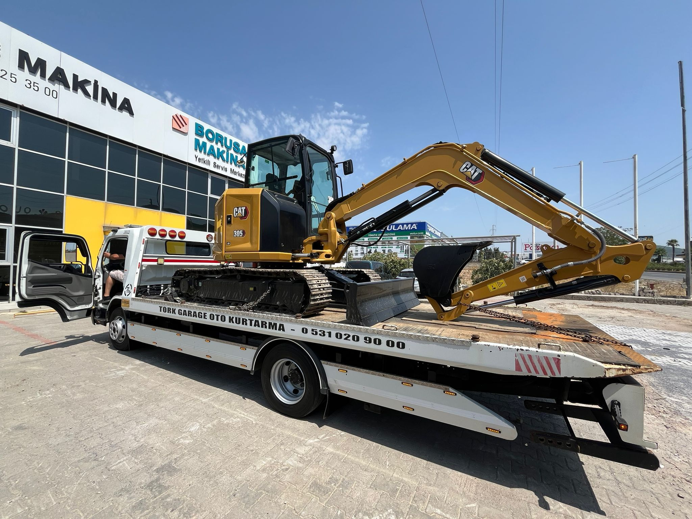
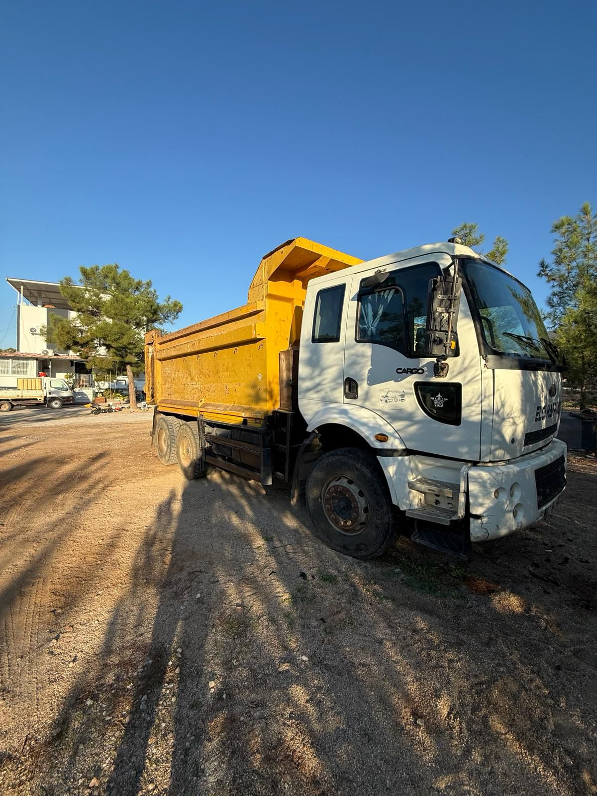
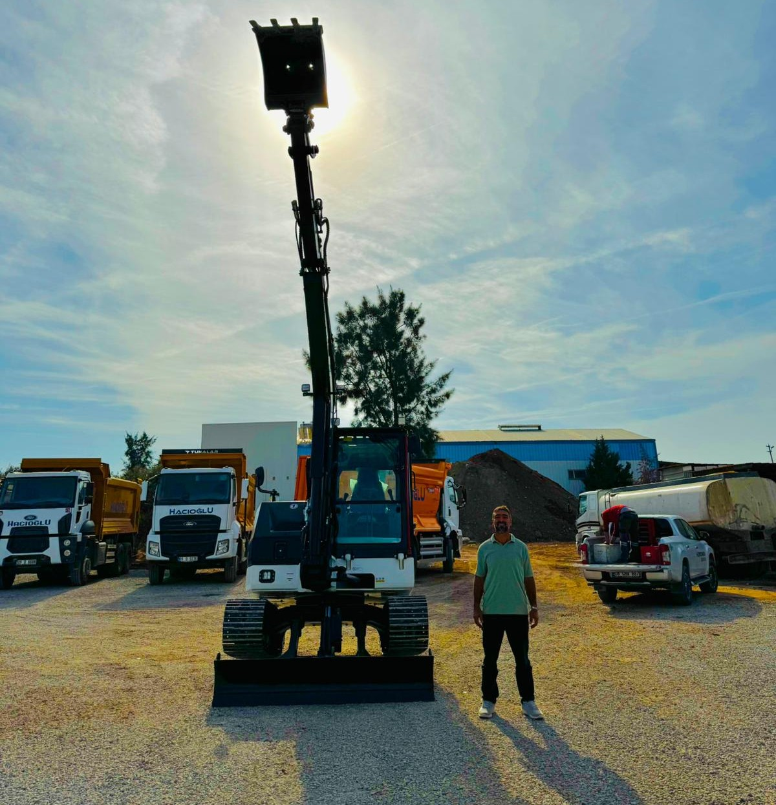
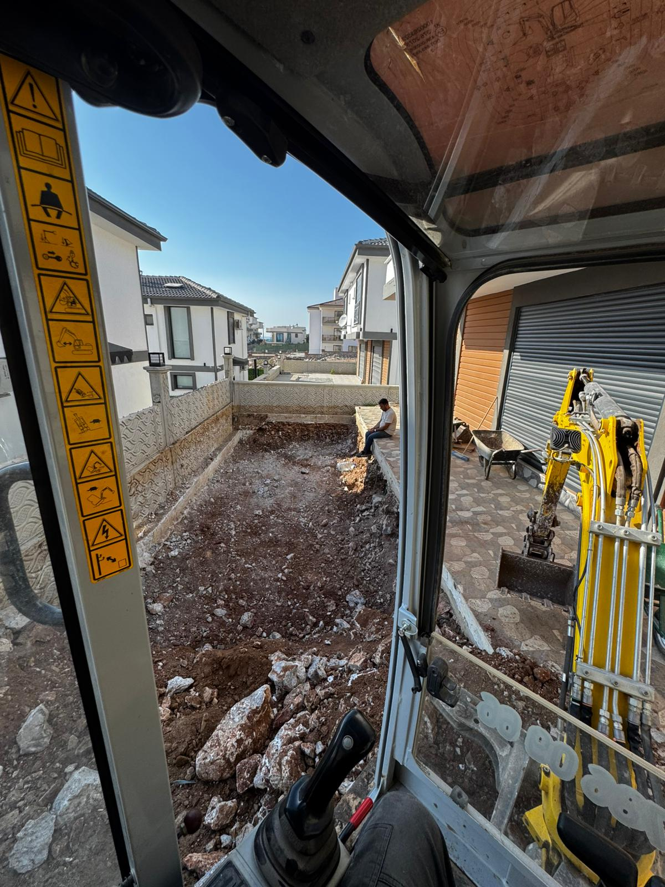
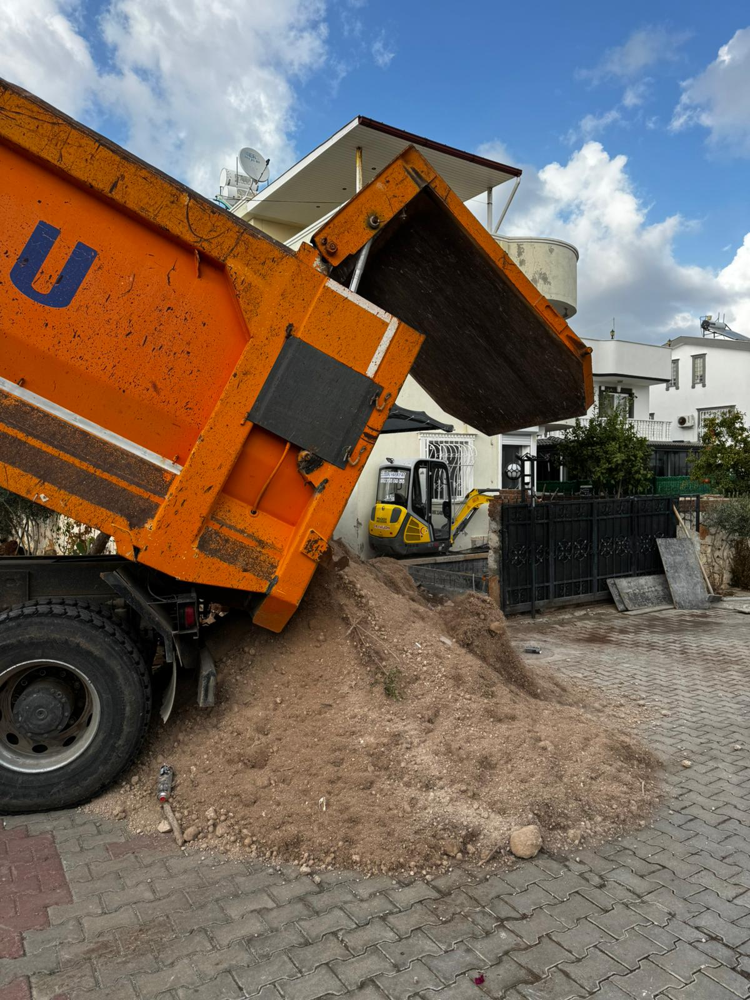
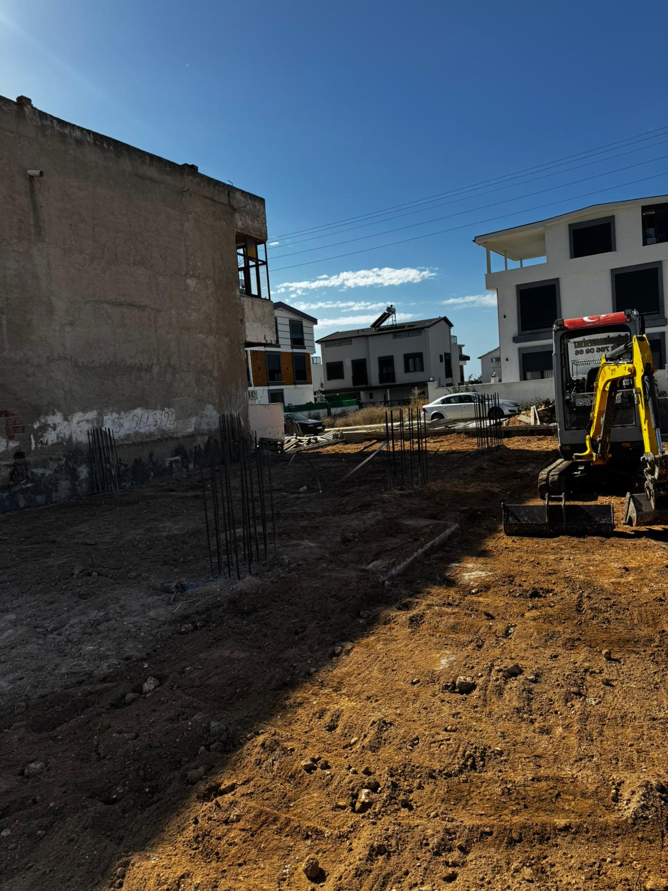
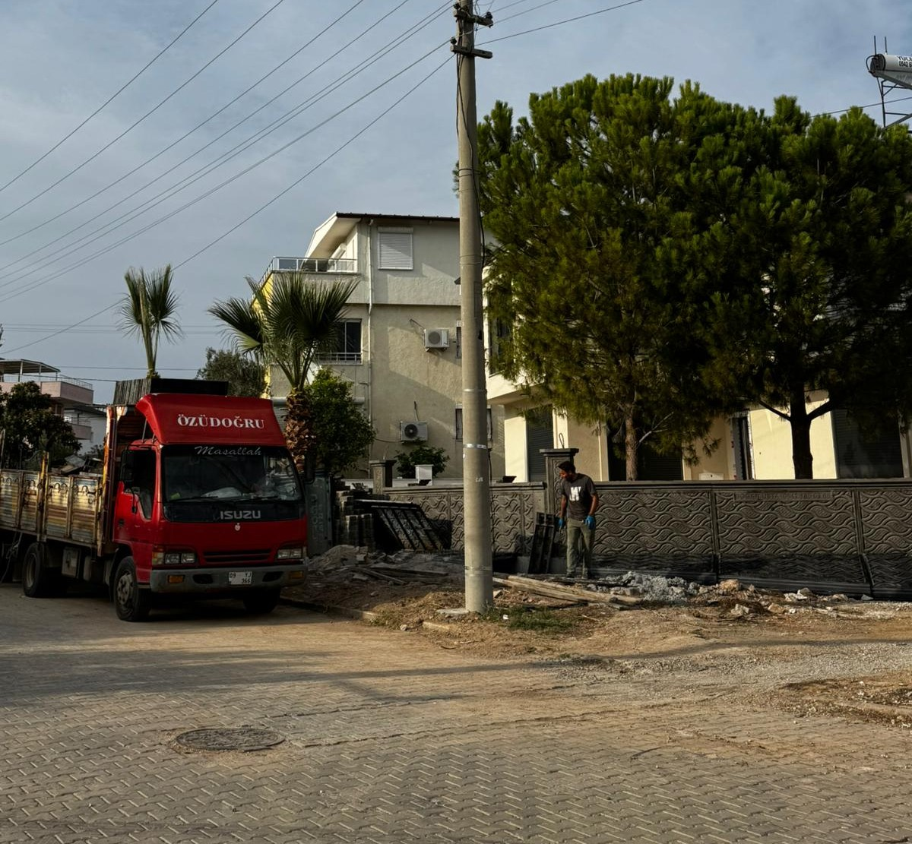
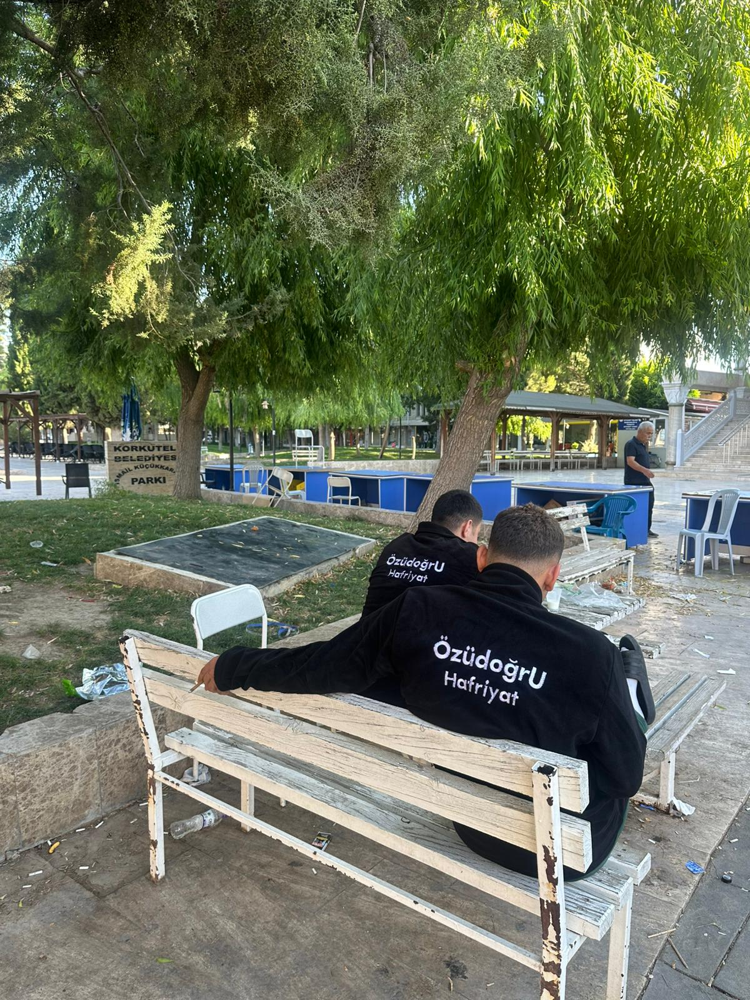

Tamamladığımız profesyonel hafriyat projelerinden kareler.
Ana Sayfaya Dön







Özüdoğru Hafriyat olarak, her projenin kendine has zorlukları olduğunu biliyoruz. Bu galeri, sadece güçlü ekipmanlarımızı değil, aynı zamanda **projelerimizi ne kadar titizlikle yürüttüğümüzü** de göstermektedir. Tecrübeli kadromuzla, en zorlu zemin koşullarında bile belirlenen zaman çizelgesine uygun ve çevreye duyarlı çözümler sunuyoruz. Fotoğraflarla desteklediğimiz bu alanda, yaptığımız işin kalitesini bizzat inceleyebilirsiniz.
Temel amacımız, müşterilerimize **hızlı, güvenli ve ekonomik** hafriyat hizmetleri sunmaktır. Galeri bölümümüzde gördüğünüz tüm hizmetler, uzmanlık alanımız dahilindedir: